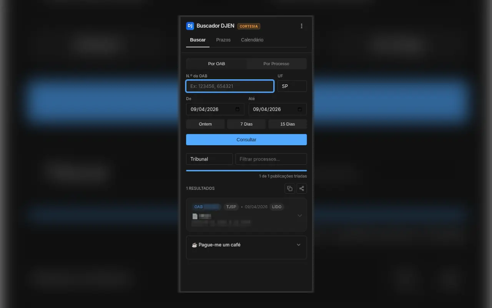
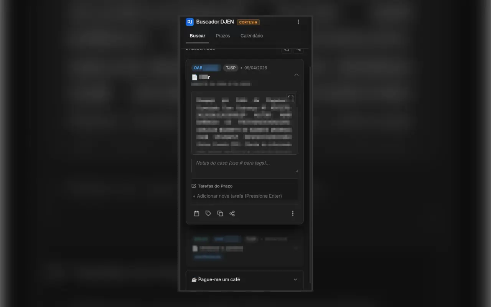
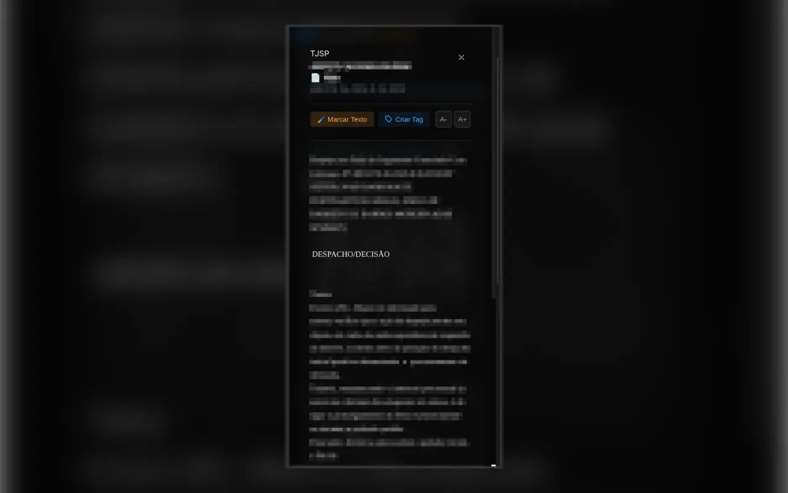
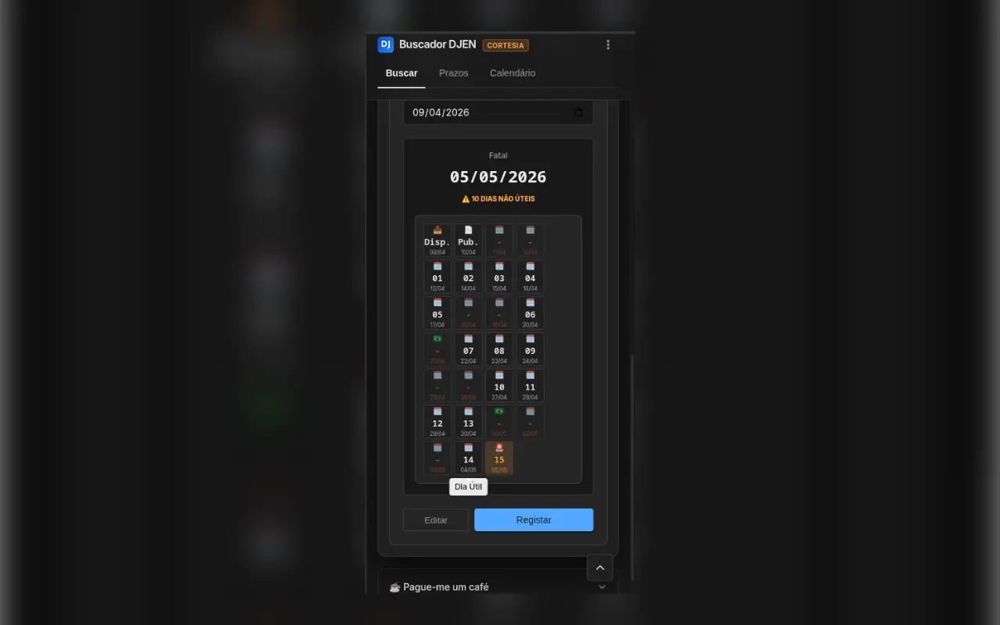
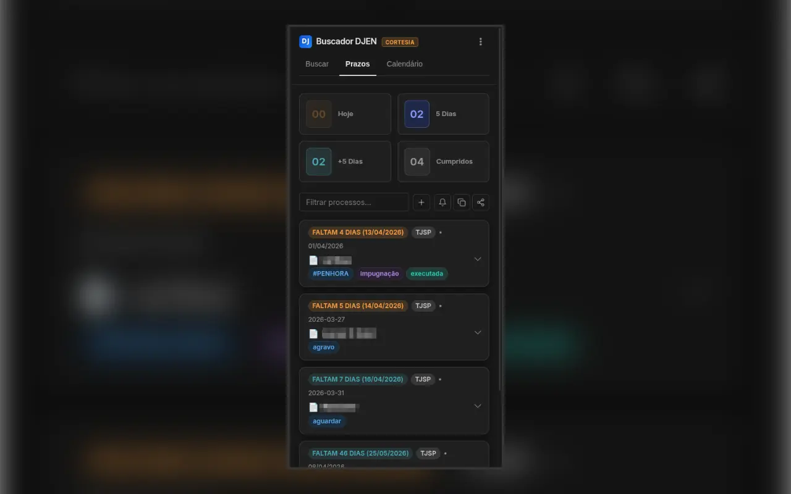
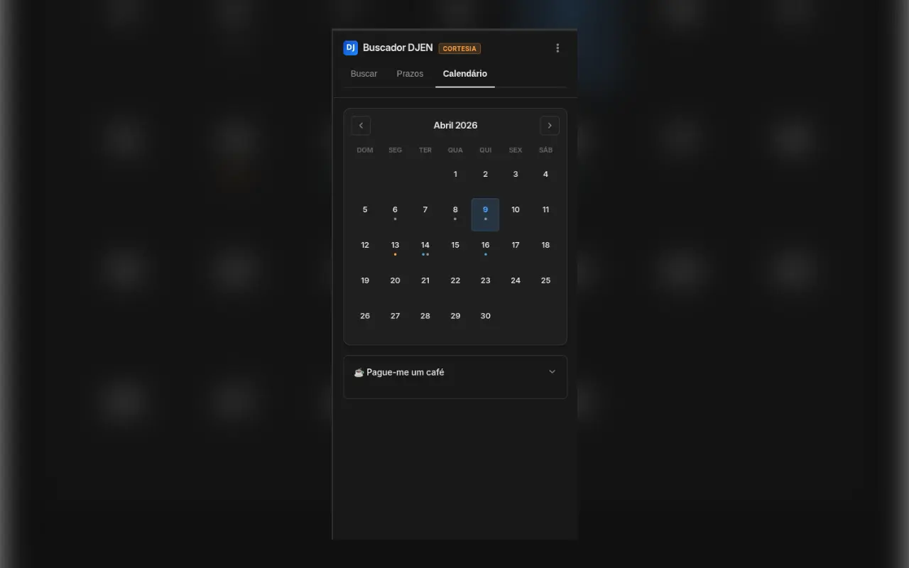
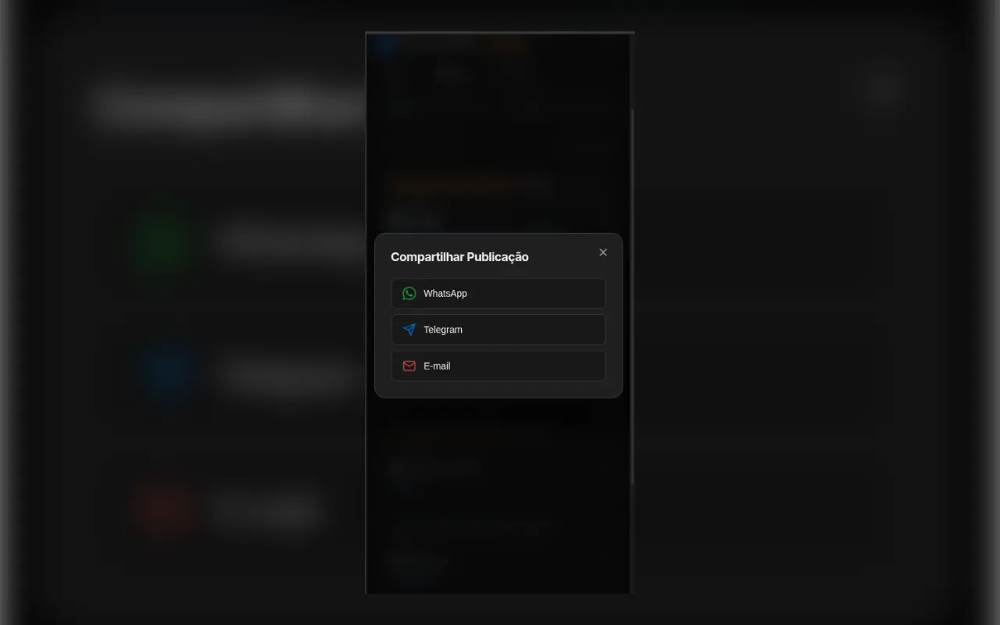
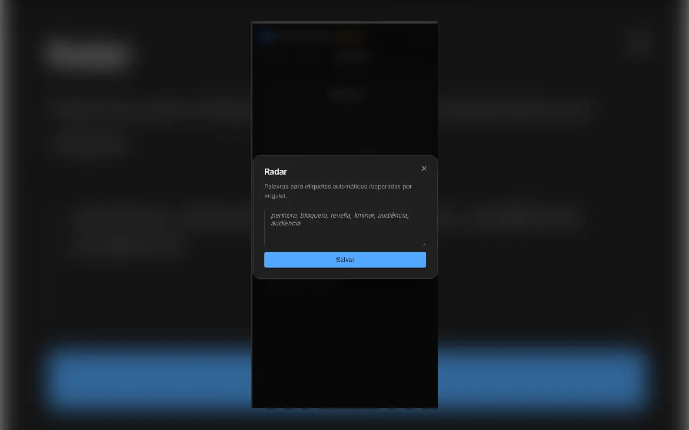
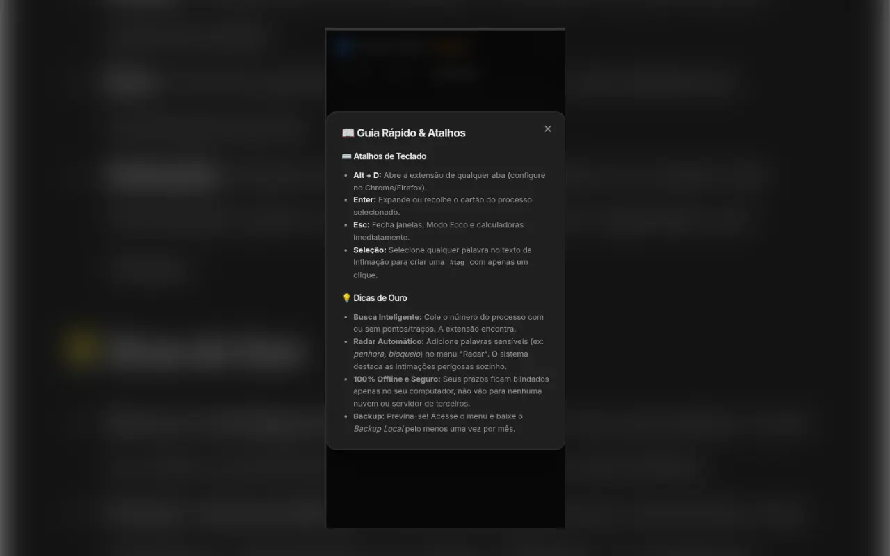
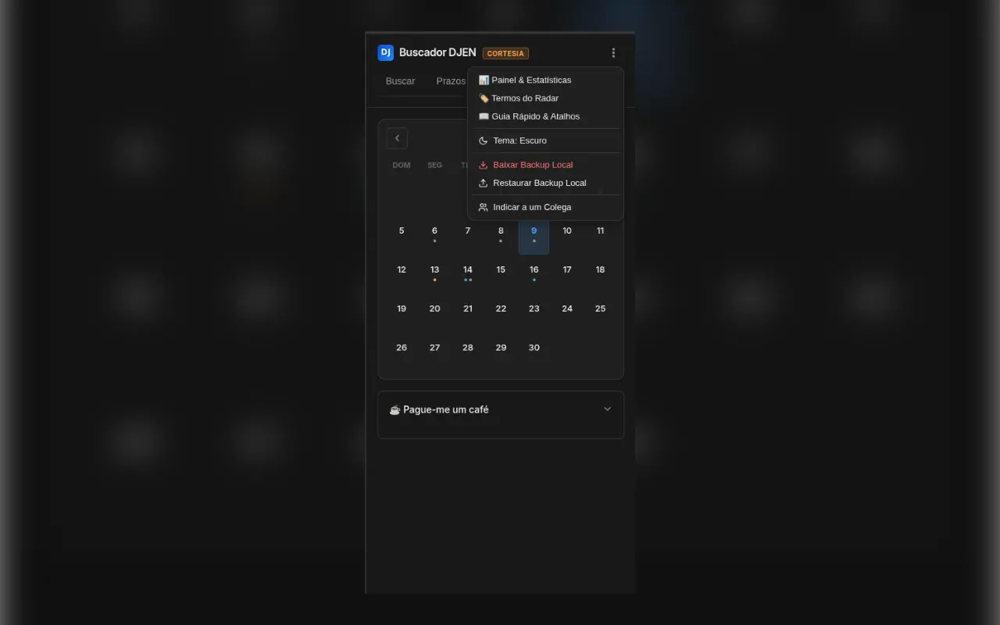

Buscador DJEN
CORTESIA
Buscador DJEN
CORTESIA
Buscador DJEN
CORTESIA
Buscador DJEN
CORTESIA
Transforme seu navegador em uma central de auditoria de prazos, leitura limpa e gestão de tarefas. Sem sincronização em nuvem, com total sigilo profissional.
Explore a interface interativa abaixo para conhecer o design e o fluxo de trabalho da extensão.
Apenas sua OAB e UF. Resultados instantâneos, sem captchas intermináveis ou lentidão.
Dias úteis ou corridos. O sistema desvia automaticamente de feriados, suspensões e do recesso forense.
Uma lista de afazeres para cada intimação. O foco da sua pauta permanece no que realmente importa.
Detecção automática de urgências (Liminares, Penhoras) e um modo de leitura imersiva sem distrações.
Exporte prazos para o Google Agenda em um clique. Gere relatórios estruturados para o WhatsApp.
Sem servidores externos. Seus dados, processos e agenda ficam criptografados apenas na sua máquina.










Sem lentidão. Sem mensalidades abusivas. Instale agora e automatize sua rotina.